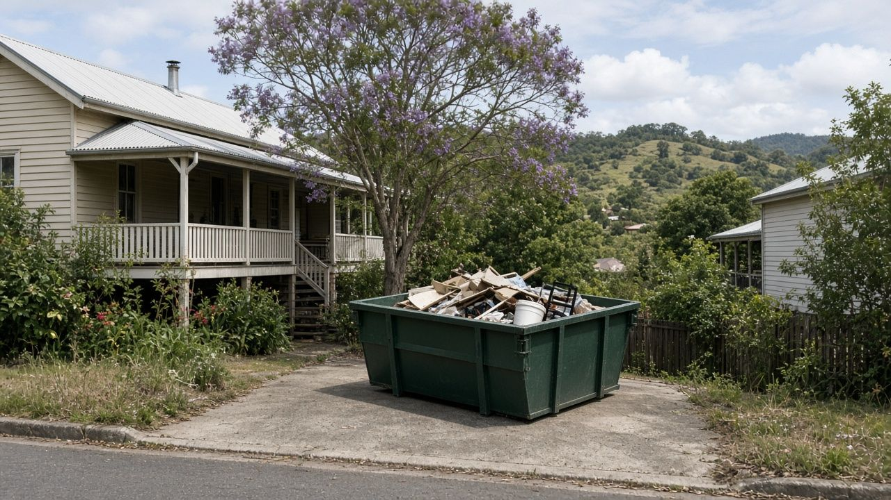
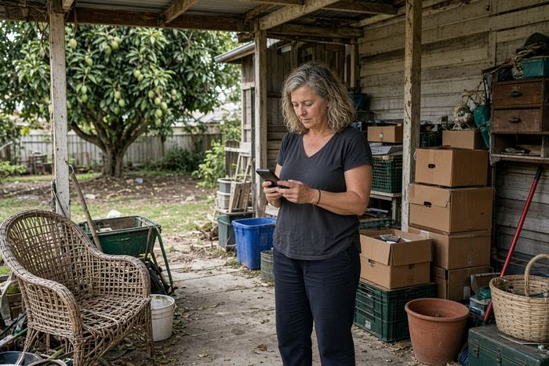
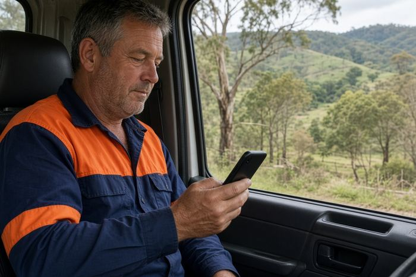
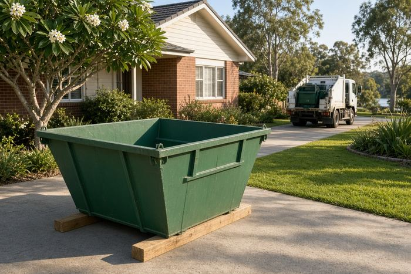
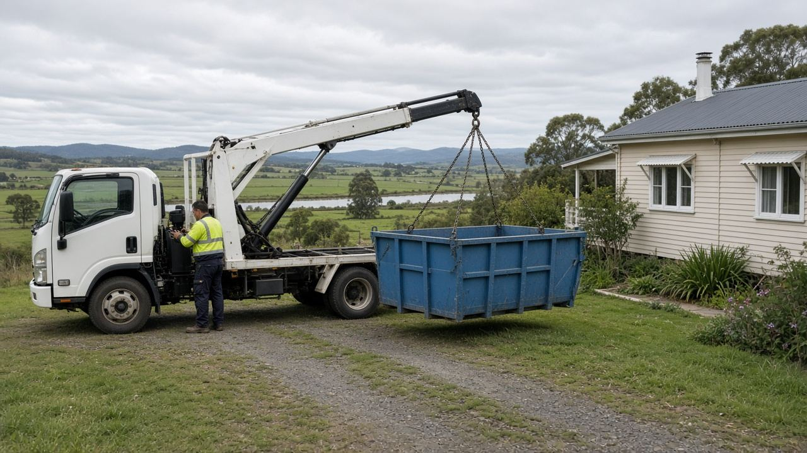
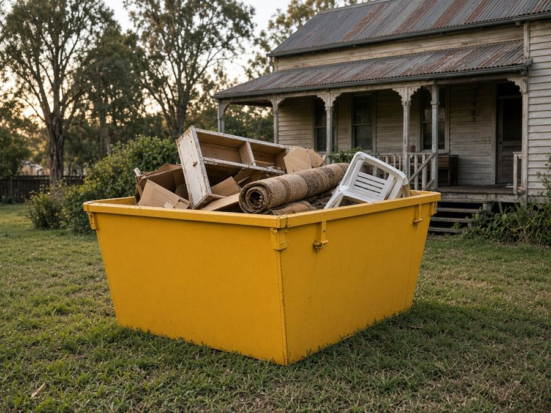
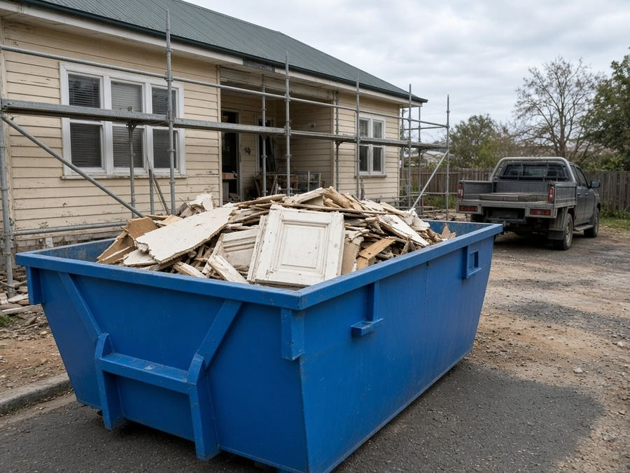
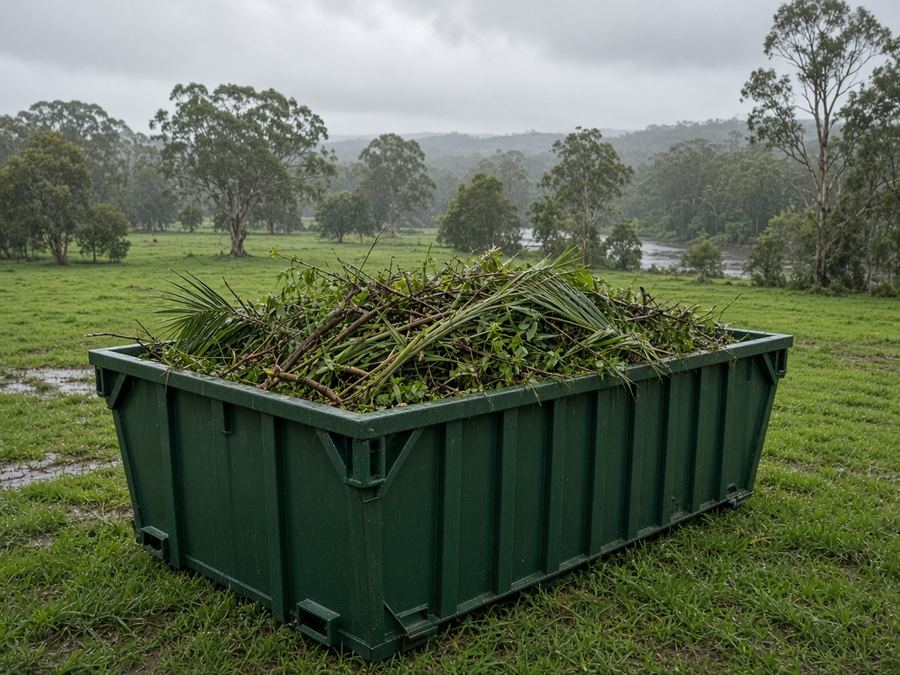
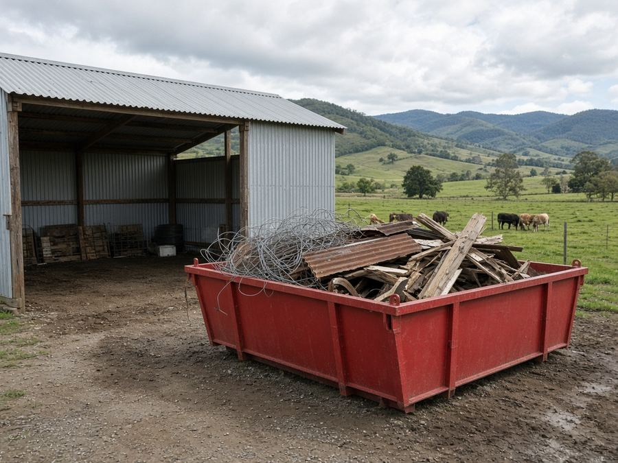
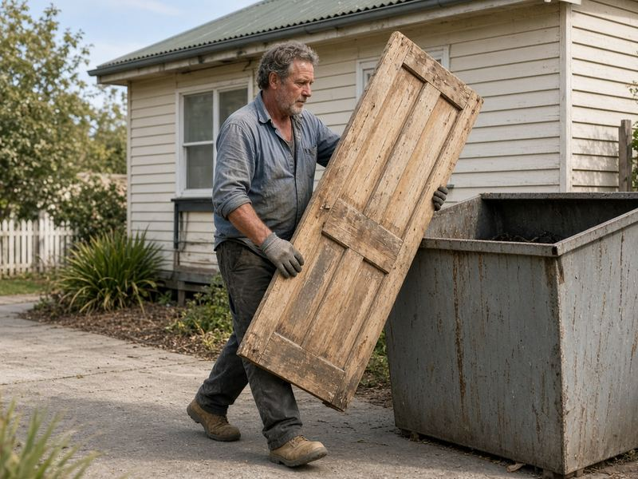

Skip Bins Taree: Free Skip Bin Quotes Across the Manning Valley
Clearing out the shed in Cundletown, gutting a bathroom in Taree or cleaning up after a Manning River flood? Tell us your suburb, skip size and waste type, and we'll pass it to one local skip bin operator for a free, no-obligation quote.
Updated 23 October 2026
Get a free skip bin quote in Taree
- Free quote for your exact job
- One local operator, not a call-centre auction
- Taree, Wingham, Old Bar, Harrington and the Manning Valley
- No obligation to book
How it works

1Tell us about the job
Choose your suburb, skip size and waste type in the quote form, then add your name and phone number.

2We pass it to one local operator
Your request goes to one skip bin company that covers your part of the Manning Valley, so you aren't chased by five firms at once.

3They confirm price and delivery
You deal with the operator directly, agree the price and drop-off day, and only book if the quote suits you.
Skip Bins Taree is a referral and quote service run by Raf Web Studio. We don't own trucks or bins, and we don't take payments. The operator who quotes you supplies the skip and sets the price and hire terms.
Skip bin sizes for Taree jobs
Most Taree jobs fit one of the sizes below: a 2–3 m³ skip for a shed or carport clean-out, 4–6 m³ for a bathroom or kitchen, and 8 m³ or more for a full house or a flood clean-up. Skips are measured in cubic metres (m³). Wheelie bin comparisons assume a standard 240-litre bin (0.24 m³). Trailer loads assume a 6×4 box trailer loaded level with its sides, roughly 1 m³. Shapes and dimensions vary between operators, so we don't list exact measurements.


Illustrations are approximate and not to an exact scale.
Mini skip
≈ 8 wheelie bins · ≈ 2 trailer loads
A carport or shed tidy-up in Taree, or a small amount of heavy waste such as broken pavers.
Small skip
≈ 13 wheelie bins · ≈ 3 trailer loads
A backyard clean-up, a room or two of old furniture, or a weekend of pruning.
Bathroom or laundry reno
≈ 17 wheelie bins · ≈ 4 trailer loads
A bathroom or laundry renovation, or old carpet and underlay from a few rooms.
Kitchen reno or big clean-up
≈ 25 wheelie bins · ≈ 6 trailer loads
A kitchen renovation, or clearing a holiday house at Old Bar or Harrington.
House clear-out
≈ 33 wheelie bins · ≈ 8 trailer loads
Moving house, a deceased estate, or a medium renovation with mixed waste.
Large renovation
≈ 38 wheelie bins · ≈ 9 trailer loads
Bigger renovations, extensions, or clearing a farmhouse with bulky items.
Builders and big jobs
≈ 50 wheelie bins · ≈ 12 trailer loads
Building sites, a shed or deck demolition, or a large post-storm clean-up. Needs good truck access.
Some operators also offer skip bags of about 1 m³. Heavy waste (soil, concrete, bricks, tiles) usually goes in a smaller bin because of weight limits. Rural blocks out towards Krambach, Croki or Johns River may need a check on access for the truck.
What can and can't go in a skip
Waste type matters as much as size. Operators sort and tip loads at licensed facilities such as the Taree Waste Management Centre at Tinonee, and each type of waste costs a different amount to dispose of. Being upfront about what's going in gets you an accurate price.
Usually accepted
- General household waste: furniture, toys, clothes, boxes, cupboard contents and general junk.
- Green waste: branches, palm fronds, lawn clippings, camphor laurel prunings and storm debris (often cheaper on its own, with no dirt or rubbish mixed in).
- Renovation waste: timber, plasterboard, old cabinets, carpet, tiles and fittings.
- Heavy or clean fill: soil, sand, concrete, bricks, rock and pavers (often needs its own bin and has a lower weight limit).
- Scrap metal: old roofing iron, fencing, farm gates and outdoor furniture.
Not accepted, or extra charge
- Asbestos and fibro: never in a normal skip (see below).
- Tyres: usually banned or charged per tyre.
- Car and household batteries: a fire risk in a skip.
- Gas bottles and aerosols: can explode when compacted.
- Paint, oils, chemicals and liquids: including pool chemicals, sump oil and farm chemicals.
- Mattresses: often accepted for an extra fee.
- Food waste, medical waste and e-waste: check first. Many operators won't take TVs, computers or fluorescent tubes.
A note on asbestos
Plenty of older homes, sheds and holiday fibros around Taree, Old Bar and Harrington were built with fibro sheeting, and it can contain asbestos. In NSW, removing more than 10 square metres of bonded (non-friable) asbestos needs a licensed removalist, and any friable asbestos needs a Class A licence. See SafeWork NSW's asbestos guidance. If you suspect asbestos, say so on the quote form. Never hide it in a general skip.
Dropping things off yourself
The Taree Waste Management Centre is at 6843 The Bucketts Way, Tinonee. MidCoast Council lists it as open daily from 7am to 5pm (closed Christmas Day and Good Friday), phone (02) 6551 5266. It has a Community Recycling Centre for household problem waste such as paint, gas bottles, batteries and oils, and a Reviva tip shop for reusable goods. Check MidCoast Council's website for current fees and accepted items before you go.
Skip bin prices in Taree
We checked for skip bin prices published by operators in the Taree area on 23 Oct 2026. Local operators we found don't publish a price list, and the only online figures came from a national comparison site whose numbers we couldn't verify, so we don't show them. Tell us about your job and a local operator will quote for it. Get a free quote.
Prices vary by size, waste type and job. The operator quotes for your bin size, waste type and suburb, so you get a real number rather than a guess.
What changes the price
Size and weight
Bigger bins cost more, but the price per cubic metre usually drops as you go up. Heavy loads have weight limits.
Waste type
Clean green waste and general household waste are usually cheaper to tip than mixed building waste, soil or concrete.
Distance and hire length
Delivery out to Harrington, Crowdy Head or Krambach, extra hire days and tricky access can all change the price.
To save money, pick the right size, keep green waste and heavy waste out of general rubbish, and only book the days you need.
Putting a skip on the street: MidCoast Council rules
Last checked: 23 Oct 2026
On your own property
The easiest spot is your own land: the driveway, front yard or a firm patch of lawn. Council's section 68 approval is for waste containers in a public place, so a skip that sits entirely on your property generally doesn't need it. Strata by-laws or development consent conditions can still apply. On low-lying blocks near the river, avoid soft ground after rain, and use planks to protect a concrete driveway.
On the road, footpath or nature strip
MidCoast Council lists "placing a waste storage container in a public place" as an activity that needs approval under section 68 of the Local Government Act 1993, lodged through the NSW Planning Portal. Council's road, footpath and drainage approvals page also says you need its permission for works or activities on a public road, footpath or nature strip, including temporarily occupying it.
Before you book a skip on the street, check with MidCoast Council about whether you need approval, the cost and how long it takes. Call (02) 7955 7777 (Monday to Friday, 8:30am to 4:30pm) or visit the MidCoast Council website. Mention it on the quote form too, because the operator may be able to advise on placement.
Wherever the skip goes, keep it clear of driveways, hydrants, bus stops and footpaths, and don't fill it above the rim.

Free skip bin quotes across the Manning Valley
Get a free quoteSkip bin guides for Taree
Plain-English guides to sizes, waste rules and MidCoast Council permits, plus pages for nearby towns.
Local area guides
Areas we cover around Taree
We take quote requests from Taree and the surrounding Manning Valley. The operator confirms whether they deliver to your street.
Taree and nearby
- Taree
- Taree South
- Cundletown
- Purfleet
- Tinonee
Upriver and inland
- Wingham
- Krambach
- Croki
- Lansdowne
- Coopernook
- Johns River
Coast and islands
- Old Bar
- Wallabi Point
- Manning Point
- Harrington
- Crowdy Head
- Mitchells Island
- Oxley Island
Not on the list? Choose "Other" in the form and tell us your town.
Common skip bin jobs in Taree
These are the jobs people around the Manning most often need a skip for.

Home and garage clean-outsDecluttering, moving house or clearing a deceased estate. A 3–6 m³ skip suits most homes.
RenovationsBathrooms, kitchens and decks. Tell the operator if any fibro is involved.
Storm and green wasteFallen branches, palm fronds and big garden clean-ups. Keep it clean for a cheaper green-waste rate.
Farm and acreage clean-upsOld fencing, sheds and junk on rural blocks around Wingham, Krambach and Coopernook.Flood clean-ups
After a Manning River flood, wet carpet, furniture and plasterboard pile up fast. Larger skips and quick turnaround matter most, so say it's a flood job in the form.
Holiday house turnovers
Clearing an older beach house at Old Bar, Harrington or Crowdy Head before a sale or rental. Check whether there's room for the bin on the block.
Skip bin FAQ for Taree
How much does a skip bin cost in Taree?
It depends on the size, waste type, hire length and how far the truck travels. Local operators we checked don't publish set prices, so the easiest way to get a real figure is a free quote for your exact job.
What size skip do I need?
A 2–3 m³ skip suits a shed or small garden clean-up, 4 m³ a bathroom, 6 m³ a kitchen or large clean-up, and 8 m³ or more a whole-house clear-out. If you're unsure, choose "Not sure" and the operator will help.
Do I need a council permit for a skip in Taree?
If the skip sits on the road, footpath or nature strip, MidCoast Council approval under section 68 is generally required. If it's entirely on your property, you generally don't need one. Check with MidCoast Council on (02) 7955 7777.
Can I put fibro or asbestos in a skip?
No. Asbestos can't go in a general skip. It has to be wrapped and disposed of under NSW rules, and more than 10 m² of bonded asbestos needs a licensed removalist. Tell the operator if you suspect asbestos.
Do you deliver to Wingham, Old Bar and Harrington?
We take quote requests from across the Manning Valley, including Wingham, Old Bar, Harrington, Crowdy Head and Coopernook. The operator confirms whether they deliver to your address.
How long can I keep the skip?
Many operators offer a few days to a week as standard, with extra days on request. Tell us how long you need in the form.
Where does the waste go?
Operators sort loads and take them to licensed facilities. The MidCoast area's main facility is the Taree Waste Management Centre at Tinonee.
Can I take my own rubbish to the tip instead?
Yes. The Taree Waste Management Centre at 6843 The Bucketts Way, Tinonee is open daily 7am to 5pm except Christmas Day and Good Friday. A skip saves the trips if you have a lot of waste.
Is a skip useful for a flood clean-up?
Yes. Wet carpets, plasterboard and furniture are bulky and heavy. Say it's a flood clean-up in the form so the operator can suggest a size and timing.
Can I mix green waste and general rubbish?
You can, but it's often charged at the mixed rate. Keeping clean green waste separate can get you a better price.
What can't go in a skip?
Asbestos, tyres, batteries, gas bottles, paint, oils, chemicals and liquids are generally excluded. Mattresses and e-waste are often extra or not accepted.
Will the truck damage my driveway?
Skip trucks are heavy. Ask the operator to put planks or boards under the bin, and point out soft ground, low wires or overhanging trees.
Is Skip Bins Taree a skip bin company?
No. We're a referral and quote service run by Raf Web Studio. We pass your request to one local operator, who supplies the skip and sets the price.

Ready to clear it out?
Tell us your suburb, skip size and waste type and we'll pass it to one local Manning Valley operator for a free, no-obligation quote.